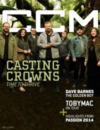
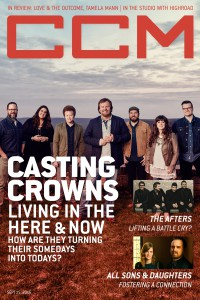

Casting Crowns
 |
| June 2008 Charisma |
 |
| November 2011 CCM Digital |
 |
| 1 February 2014 CCM Digital |
 |
| 15 September 2016 CCM Digital |
Media coverage:
- Dec 2003 in CCM "Ones to Watch: Straight To The Top", by Lizza Connor
- Jul 2004 in CCM "Insider: Storytellers", by Dan MacIntosh
- Oct 2004 in CCM "'x' Things You Probably Didn't Know About...: Casting Crowns", by Michael Nolan
- Mar 2005 in CCM "Standing Room Only: All Things New Tour", by Andy Argyrakis
- Sep 2005 in CCM "Real Life Conversations", by Melissa Riddle
- Apr 2006 in CCM "!Pop", by Christina A. Banister
- Jun 2006 in CCM "Standing Room Only: Lifesong Tour", by Andy Argyrakis
- Jan 2007 in CCM "The Art of Voting", by Jay Swartzendruber
- Jun 2007 in CCM "Story Behind the Song: Casting Crowns"
- Sep 2007 in CCM "Casting's Call", by April Hefner
- Nov 2007 in CCM "Trend Watch: Welcome To Atlanta", by Beau Black
- Jun 2008 in Charisma "Running From Fame", by Kenneth D. Macharg
- Apr 2010 in CCM Digital "What's Next: Carving Out a Place in the Middle", by Beau Black
- Aug 2010 in CCM Digital "Into the Whole World: Casting Crowns goes global", by Mark Hall
- Nov 2011 in CCM Digital "Drinking Deep", by Caroline Lusk
- Sep 2012 in CCM Digital "Tour Spotlight: Ignite Chicago Music Festival, Schaumburg Baseball Stadium, Schaumburg IL", by Andy Argyrakis
- Jan 2013 in CCM Digital "On the Horizon", by Caroline Lusk
- 1 Feb 2014 in CCM Digital "A Word of Wisdom: Stop Living, Start Thriving", by Caroline Lusk
- 15 Feb 2014 in CCM Digital "Your World: And the Gift Goes On..."
- 1 May 2014 in CCM Digital "Tour Spotlight: Thrive Tour, Sears Centre, Hoffman Estates, IL", by Andy Argyrakis
- 15 Sep 2016 in CCM Digital "The Next Best Thing", by Caroline Lusk
Albums & reviews:
2003: Casting Crowns
2018: Only Jesus
2018: Only Jesus Visual Album
- Dec 2003 in CCM, by Andy Argyrakis
- Jan 2004 in Today's Christian Woman
- Jan 2004 in Worship Leader, by Davin Seay
- Jan 2005 in YouthWorker, by Dave Urbanski
- Sep 2005 in Worship Leader
- Sep 2005 in CCM, by David McCreary
- Nov 2005 in YouthWorker, by Dave Urbanski
- Nov 2005 in Today's Christian Woman, by Lisa Ann Cockrel
- Oct 2006 in CCM, by David McCreary
- Aug 2007 in CCM, by Deborah Evans Price
- Sep 2007 in YouthWorker, by Deborah Evans Price
- Sep 2007 in Worship Leader
- Oct 2007 in Charisma, by Leigh Devore
- Nov 2008 in Worship Leader
- Dec 2008 in Christianity Today, by Russell Breimeier
- Dec 2008 in Charisma, by J.J. Everett
- Nov 2008 in YouthWorker, by Andy Argyrakis
- Nov 2009 in Worship Leader, by Daryl Bean
- Jan 2010 in Charisma, by Leigh Devore
- Aug 2010 in CCM Digital, by Matt Conner
- Oct 2011 in CCM Digital, by Grace S. Aspinwall
- Nov 2011 in Worship Leader, by Barry Westman
- Feb 2013 in CCM Digital, by Grace S. Aspinwall
- Jan 2014 in Worship Leader, by Jeremy Armstrong
- 15 Mar 2015 in CCM Digital, by Grace S. Aspinwall
- 15 Dec 2015 in CCM Digital, by Matt Conner
- 1 Sep 2016 in CCM Digital, by Matt Conner
2018: Only Jesus
2018: Only Jesus Visual Album
Award Summary (Nominations / Wins)
Dove Awards- 2004 Dove Awards
- Pop/Contemporary Album: Casting Crowns
- New Artist
- Pop/Contemporary Recorded Song: "If We Are The Body"
- Group of the Year
- Artist
- Short Form Music Video: "American Dream"
- Long Form Music Video: Live from Atlanta
- Inspirational Recorded Song: "Voice Of Truth"
- Pop/Contemporary Recorded Song: "Who Am I"
- Rock/Contemporary Recorded Song: "American Dream"
- Pop/Contemporary Album: Lifesong
- Group of the Year
- Artist
- Pop/Contemporary Recorded Song: "Lifesong"
- Group of the Year
- Artist
- Long Form Music Video: Lifesong Live
- Pop/Contemporary Recorded Song: "Praise You In This Storm"
- Pop/Contemporary Album: The Altar and The Door
- Group of the Year
- Artist
- Pop/Contemporary Recorded Song: "East To West"
- Group of the Year
- Artist
- Short Form Music Video: "Slow Fade"
- Long Form Music Video: The Altar and The Door Live
- Christmas Album: Peace On Earth
- Group of the Year
- Artist
- Pop/Contemporary Recorded Song: "Until The Whole World Hears"
- Pop/Contemporary Album: Until The Whole World Hears
- Long Form Music Video: Until the Whole World Hears... Live
- Group of the Year
- Artist
- Pop/Contemporary Album: Thrive
- Artist
- Song: "Thrive"
- Inspirational Album: Glorious Day: Hymns of Faith
- Pop/Contemporary Recorded Song: "Just Be Held"
- Worship Album: A Live Worship Experience
- Contemporary Christian Artist
- Pop/Contemporary Album: The Very Next Thing
- Contemporary Christian Artist
- Christmas / Special Event Album: It's Finally Christmas EP
- Song: "Only Jesus"
- Pop/Contemporary Album: Only Jesus
- Long Form Music Video: Only Jesus Visual Album
- Pop/Contemporary Recorded Song: "Only Jesus"
- 2005 Grammy Awards
- Best Pop/Contemporary Gospel Album: Lifesong
- Best Gospel Performance: "East To West"
- Best Pop/Contemporary Gospel Album: The Altar and The Door
- Best Gospel Performance: "East To West"
- Best Gospel/Contemporary Christian Music: "Jesus, Friend of Sinners"
- Best Contemporary Christian Music Song: "Jesus, Friend of Sinners"
- Best Contemporary Christian Music Album: Come to the Well
- Best Contemporary Christian Music Performance/Song: "Oh My Soul"
© 2011 CMnexus. Last updated September 2019. Contact: editor -AT- cmnexus -DØT- org About